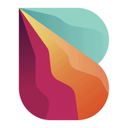

Best tools for monitoring agents in production (2026)
Observability for agents in production: traces, costs, latency and errors in one place. We list 52 tools for monitoring agents in production below, each with a link-checked page, pricing as the maker states it and alternatives.
Updated
52 tools: 29 open source, 3 source-available, 15 free or freemium, 5 paid, usage-based or enterprise.
Evals and benchmarks (15) See the full list →
Inngest
Inngest is a durable workflow orchestration platform for running stateful step functions and AI workflows on serverless, servers or the edge. You write functions in TypeScript, Python or Go with automatic retries, queues, throttling and human-in-the-loop waits, and its AgentKit and AI inference steps let you build durable, long-running AI agents with tracing and evals. The server is source-available (SSPL, converting to Apache 2.0 later) and can be self-hosted, or you can use Inngest Cloud.
Added
Langfuse
Open-source LLM observability, tracing and evals.
Added
MLflow
Open-source platform for tracing, evaluating and managing agents, LLM apps and ML models.
Added
Opik
Comet's open-source platform for tracing, evaluating and monitoring LLM apps, RAG systems and agent workflows, self-hosted or in the cloud.
Added
Arize Phoenix
Open-source tracing and evaluation for LLM apps.
Added
Agenta
Open-source LLMOps platform for prompt management, evaluation and observability.
Added
Future AGI
Open-source platform for evaluating, tracing, simulating and guarding LLM and AI agent applications, self-hostable or cloud.
Added
W&B Weave
Weights & Biases toolkit for tracing and evaluating agents.
Added
LangSmith
Tracing, evals and monitoring for LLM apps and agents.
Added
Arize AI
Agent observability and evaluation platform with tracing, evals and experiments for improving AI agents.
Added
Braintrust
Evals and observability platform for AI products.
Added
Confident AI
Enterprise platform for AI evals and observability that gives teams one standard for measuring and monitoring AI quality.
Added
Kore.ai Autoloop
Optimization engine in Kore.ai Agent Platform Artemis that evaluates agents against business goals, diagnoses failures from traces, applies targeted fixes, and re-verifies; GA Oct 2026.
Added
Openlayer MCP
Openlayer's MCP server, letting coding agents pull evaluation results, failing tests and monitoring data from Openlayer so they can debug and improve AI systems from the IDE.
Added
Respan
Observability and evaluation platform for LLM apps and agents.
Added
Guardrails and policies (7)
LiteLLM
Open-source AI gateway and Python SDK that calls 100+ LLM providers in the OpenAI format, with cost tracking, guardrails, load balancing and logging.
Added
Failproof AI
Observability and policy enforcement for AI agent harnesses.
Added
coucou
Mac notch and phone companion that monitors your Claude Code, Codex, Cursor and Gemini CLI sessions and lets you approve permissions on the go.
Added
Metorial
Open-source identity and access layer that connects AI agents to 1,200+ integrations via MCP, CLI or API with auth, permissions and observability.
Added
ToolHive
Stacklok platform that runs MCP servers in isolated containers with per-request identity, access policy and observability.
Added
OpenAPPA
OpenAPPA is a deterministic guardrail that sits between an AI agent and its tools and tracks how data flows across tool calls, instead of asking a second model to judge each call. Policies decide whether untrusted or sensitive data may reach a given action, which blocks data exfiltration caused by prompt injection or hallucination while letting agents finish their tasks. It plugs into Claude Code, Pi, OpenCode, kAgent and Archestra, comes with reusable policy "batteries", validation, observability and reporting, and is backed by a NeurIPS workshop paper with published benchmarks. It is in preview as an open RFC.
Added
NVIDIA Open Agent Safety Platform
Reference stack pairing OpenShell with NVIDIA Sentry on BlueField-4 DPUs for hardware-level agent monitoring.
Added
More tools (30)
MorPro
MorPro is an AI-native operating system (TMS) for trucking companies, owner-operators and small fleets of 1 to 25 trucks. Genie and a team of AI agents (Ava, Alex, Cece and Sage) handle dispatch and load bidding, broker ETA updates, BOL paperwork filing, hours-of-service and compliance monitoring, invoicing and settlements, with Genie asking before it acts.
Added
HaveTML
HaveTML lets AI agents publish what they make as a permanent share link. Ask Claude, Cursor or any MCP client to publish HTML, Markdown, JSON or YAML, and you get a sandboxed link anyone can open without logging in. Each link keeps its version history, supports comments, and can be set to private, unlisted or public.
Added
Sim Studio
Workspace for visually building, deploying and monitoring AI agents and workflows.
Added
OneUptime MCP
OneUptime's official MCP server, giving agents access to monitors, incidents, on-call and status pages in this open-source observability platform. Free plan, paid plans from $22 per user, or self-host.
Added
Helicone
Open-source LLM observability and gateway.
Added
AgentOps
Monitoring and session replay for AI agents.
Added
agentgateway
Proxy for AI agents and MCP servers with security and observability.
Added
Latitude
Observability platform for AI agents that captures traces, groups failures into signals and verifies fixes against real traces.
Added
Cloudflare MCP Servers
Cloudflare's collection of MCP servers for Workers, observability, DNS analytics and other Cloudflare services.
Added
abtop
htop-style monitor for Claude Code and Codex sessions and token use.
Added
Jarvis Registry
Open-source MCP and A2A agent gateway that connects copilots and agents to enterprise tools with identity, access control and observability.
Added
Laminar
Open-source observability platform for AI agents with OpenTelemetry tracing, plain-English behavior tracking and alerts.
Added
sem
Semantic layer on top of Git that diffs, blames and traces impact by function and class instead of by line, with an MCP server for coding agents.
Added
Zeron
Native control plane for running and monitoring Claude Code, Codex, Cursor, Devin and other coding agents locally.
Added
Pezzo
Cloud-native LLMOps platform for prompt design, versioning, delivery, observability and cost monitoring.
Added
Beacon
An open-source memory layer that captures traces from coding agents across harnesses and turns them into self-improving memory and visibility into what your agents did.
Added
ADR
Uber's Agentic AI Detection and Response system that secures employee and customer-facing AI agents with observability and threat detection.
Added
OpenOSINT
An open-source OSINT engine with about 20 passive investigation tools usable from a CLI, a web UI or an MCP server for AI assistants, with hosted monitoring and due-diligence plans.
Added
OpenInference
OpenTelemetry-based instrumentation that traces LLM and agent framework calls so any observability backend can show them.
Added
Judgeval
Open-source SDK for tracing agents and scoring them with agent judges, so failures in production can be found and fixes checked.
Added
Sentry MCP
Sentry's MCP server and CLI that give coding agents access to Sentry issues, errors and traces for debugging.
Added
Xquik
Xquik is an X (Twitter) data service for searching and extracting tweets, replies, followers and profiles, monitoring accounts and posting, over REST, an OAuth MCP server and SDKs; pay-as-you-go from $10 or monthly plans from $20.
Added
Agent Barn
Agent Barn is an open-source (Apache-2.0) control plane for running a fleet of AI agents on your own Kubernetes: create, configure, run and monitor agents across Slack, Microsoft Teams and Telegram from one place.
Added
UptimeRobot MCP
UptimeRobot's MCP server for creating monitors, triaging incidents and querying uptime stats for sites, APIs and servers.
Added
New Relic MCP
New Relic's MCP server for querying metrics, logs, traces and alerts through an agent.
Added
Axiom MCP
Axiom's MCP server for listing datasets and schemas and running APL queries for log exploration and monitoring.
Added

Bitquery MCP
Bitquery's hosted, read-only MCP server with 300+ tools for DEX trades, candles, wallet history and money-flow tracing across 40+ chains.
Added
Bland AI
Enterprise voice AI platform for building, deploying and monitoring phone agents with self-hosted models.
Added
Picsellia MCP Server
Official MCP server for Picsellia's computer vision MLOps platform, giving AI assistants access to datasets, experiments, models, deployments and monitoring.
Added
Wren x402 Doctor
Wren x402 Doctor helps sellers of x402 pay-per-call endpoints, the payment standard AI agents use to pay for APIs in USDC, get listed in the Coinbase CDP Bazaar and stay listed. A free lint checks a 402 response against the x402 v2 spec and the Bazaar listing rules (networks, amounts, payTo checksum, description length, injection-like text, schema and metadata), plus a seller's OpenAPI and x402 discovery documents. Paid endpoints include a Bazaar health check ($0.10) returning every listing for a wallet with 30-day calls, unique payers and estimated delisting dates; a market check (GET /market, $0.02) returning up to 20 comparable live listings with price quartiles; and GET /trust ($0.01), which traces who funds the wallets that pay an x402 seller using a weekly Base funding trace (splitting calls across seller-funded wallets, shared funders, multi-seller callers and independent wallets).
Added
GitHub repos (39)
| Repo | GitHub stars | Licence | Last push |
|---|---|---|---|
| 62,146 | MIT | 2026-10-27 | |
| 36,585 | MIT, except the ee/ directories (commercial licence) | 2026-10-27 | |
| 29,927 | Apache License 2.0 | 2026-10-27 | |
| 28,558 | Apache License 2.0 | 2026-10-27 | |
| 22,961 | Apache License 2.0 | 2026-10-27 | |
| 12,022 | Elastic License 2.0 (source-available) | 2026-10-27 | |
| 7,763 | — | 2026-10-27 | |
| 6,765 | MIT | 2026-10-27 | |
| 6,596 | MIT | 2026-10-23 | |
| 6,241 | Apache License 2.0 | 2026-10-20 | |
| 5,994 | — | 2026-10-26 | |
| 5,921 | MIT | 2026-06-25 | |
| 5,675 | Apache License 2.0 | 2026-10-26 | |
| 4,863 | MIT License, except ee/ directories (separate licence) | 2026-10-27 | |
| 4,737 | MIT | 2026-10-27 |
Top 15 of 39 by stars. Stars and licence come from each repo, checked when the listing was last verified.
Related tasks
Popular with: AI engineers · DevOps and SRE engineers · Startup CTOs · Related searches: Open-source LLM observability and eval tools
Tools are matched to tasks by category, use cases and what each tool says it does. Missing one? Submit it free.